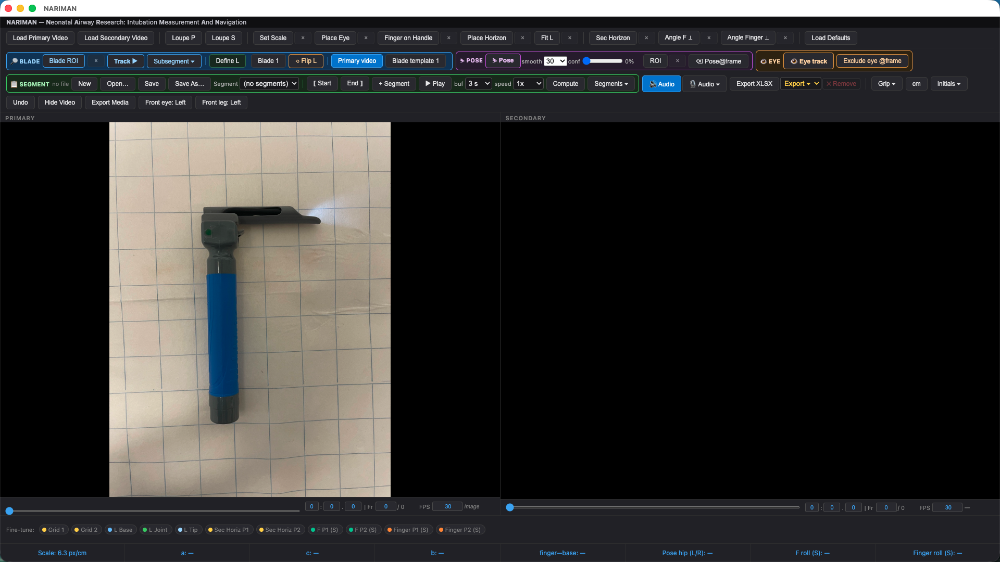

Neonatal Airway Research: Intubation Measurement And Navigation
A cross-platform desktop app for frame-by-frame measurement of neonatal intubation video. Calibrate a blade once, place a few reference points, and it computes clinical angles, distances, and range-of-motion statistics — AI-assisted, entirely on your machine.

Every value is calibrated to real-world centimeters or inches through a blade template you define once.
Four tool groups, matching the app's own toolbar.
Five-click calibration from a reference photo, four blade slots (three built in, one custom), click-drag-rotate fitting, and pixel-to-centimeter scale — plus automatic blade tracking that drives the fit frame by frame.
On-device tracking finds shoulders, hips, knees, and eyes automatically, draws both hip angles live, and confines itself to a drawn region of interest so nothing else in frame gets tracked.
A tracked marker follows the operator's head through play, compute, and frame jumps, fit from several face anchors so it holds up as the head turns.
Mark a start and end frame, compute a full pass, and get range-of-motion statistics with low-confidence frames auto-flagged and one-click excludable.
Three on-device models power four automatic capabilities — no account, no upload, no data ever leaving the machine, and no GPU required: every one of them runs on plain CPU.
Full, honest third-party attribution lives in NOTICE and THIRD_PARTY.md — not marketing copy, just the facts.
From two loaded videos to an Excel row, in one pass per trial.
Version 1.0.0 — standalone, free, and fully offline. No installer, no account, no internet connection required.